Module 7.2: Bibliographic Access, MARC, and Authority Control
LIS 5043: Organization of Information
Overview
- MARC record standard
- Deconstructing MARC records
- MARC and RDA
- Authorized Access points and authority control
- Definitions
- Purpose of authority control
- Authority work
- Establishing an authorized access point
MARC: Machine-Readable Cataloging
- Digital record format
- Developed in late 60’s, early 70’s
- Encodes representations of information to be processed by computers
- Originally designed for bibliographic data
- Can be used for many types of data
Data Sharing
MARC allows libraries to...
- Share bibliographic data
- Avoid duplication of cataloging effort
- Obtain predictable, reliable data
- Integrate cataloging for all materials
- Edit records to suit local needs
- Implement standard online catalog software
- Support a variety of retrieval mechanisms
- Support a variety of online display options
Record Structure Standards
MARC standards are related to:
ANSI/NISO Z39.2: American National Standard for Information Interchange (1971)- provides structure
- does NOT address content or content designation
ISO 2709: International Organization for Standardization Documentation; Format for Bibliographic Information Interchange
Multiple Standards
National and International MARC
MARC 21: harmonized USMARC (U.S.) and CANMARC (Canada)- UNIMARC: Eastern Europe, other parts of world
- UKMARC: Great Britain and Europe
- IBERMARC: Spain
- Others
Multiple Standards
MARC 21 is really a family of formats
Each carries specific kinds of data
Structure of each is same; semantics differ
- MARC 21 Format for Bibliographic Data
- MARC 21 Format for Authority Data
- MARC 21 Format for Holdings Data
- MARC 21 Format for Classification Data
- MARC 21 Format for Community Information
Example of Multiple Standards
MARC 21 bibliographic format field groups
0XX – Control information, numbers, codes
1XX – Main entry
2XX – Titles, edition, imprint
3XX – Physical description, etc.
4XX – Series statement
5XX – Notes
6XX – Subject access fields
7XX – Added entries, linking fields
8XX – Series added entries, holdings, etc.
9XX – Local implementation fields
Record Structure Parts
These fields are used by programmers
Leader: fixed-length field containing data about record itselfDirectory: series of fixed-length entries containing index data describing each variable-length data field in the record and its length and position
Record Structure Parts
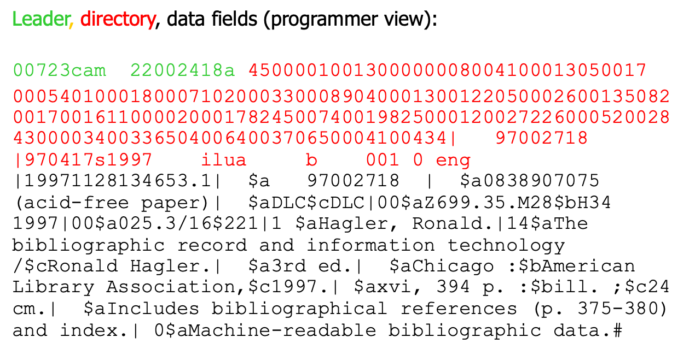Record Structure Parts
These fields are created and used by catalogers
Control Fields: mostly variable-length fields containing data necessary for processing record and representing content- tagged (labeled) 0xx
Field 008: fixed-length control field containing coded data describing books (year, type of publication, illustrations, audience, literary form, language, etc.)
Record Structure Parts
These fields are seen by catalog users
Data Fields: variable-length fields containing substantive data representing an information object- tagged 1xx – 9xx
- also called tagged fields
- often contain subfields
- tagged 1xx – 9xx
Record Structure Parts
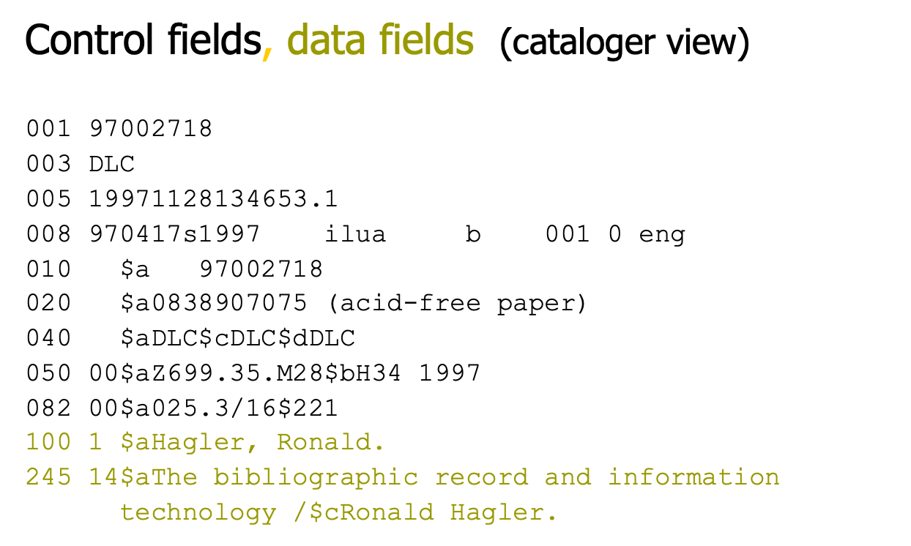Content Designation
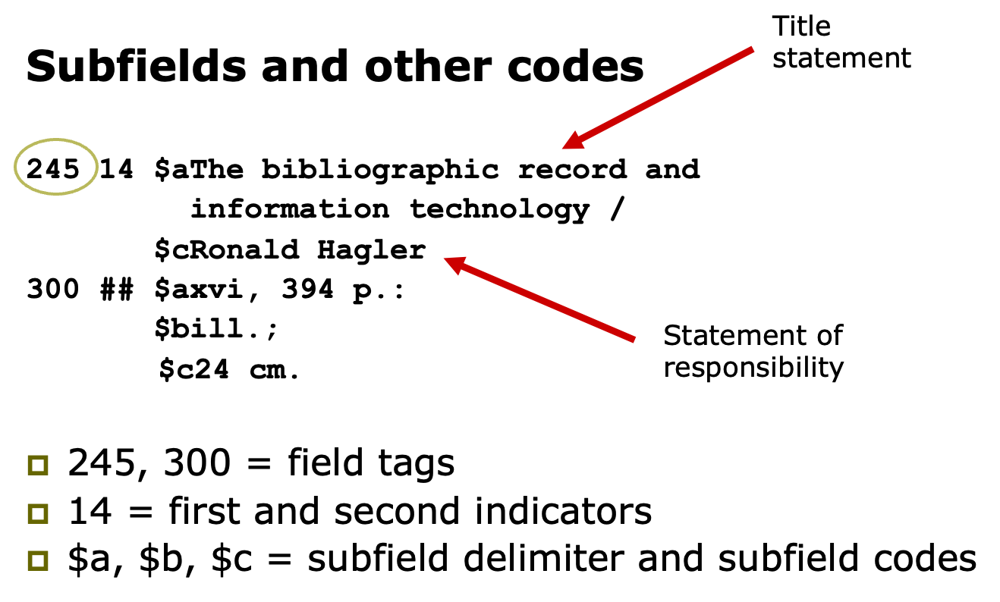MARC Bibliographic Format
- To determine what each “tag” includes in a MARC record, we use an online source called the MARC Bibliographic Format. It is available at:
- Library of Congress at: http://www.loc.gov/marc/ , then click on Bibliographic Format link or go directly to: http://www.loc.gov/marc/bibliographic/
MARC Bibliographic Format
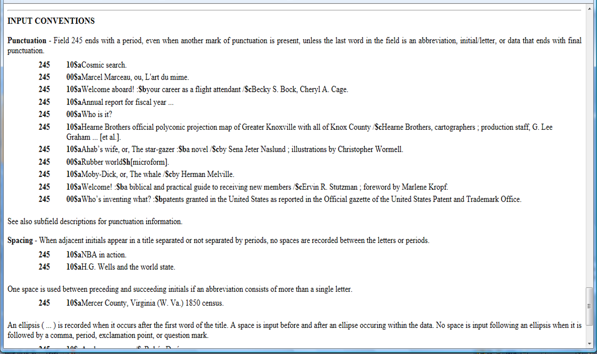Data Content
What does a MARC record look like?
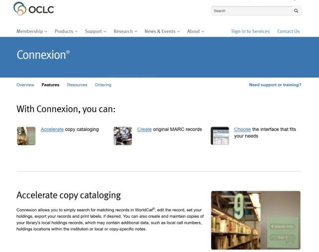MARC record in OCLC Connexion: MARC Text View
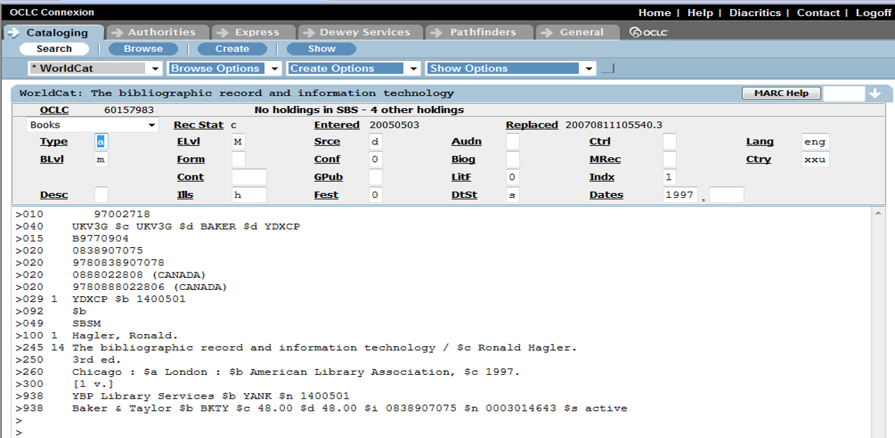MARC Record: Display Mode
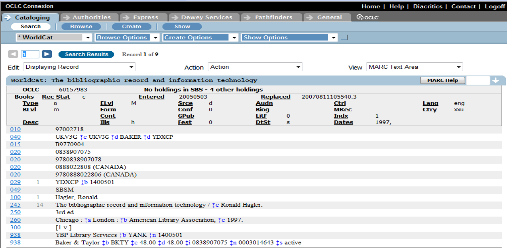MARC Record: Editing Mode/Template View
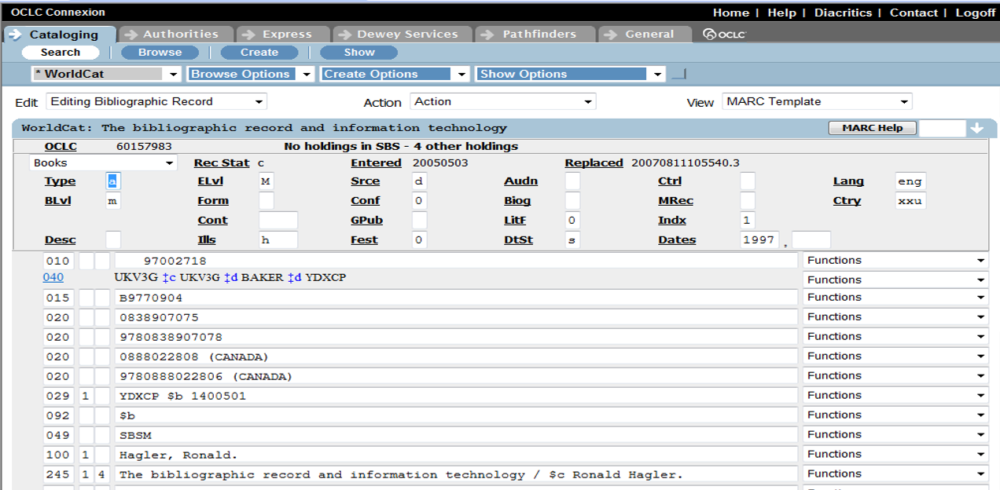New Bibliographic Framework Initiative
- The Library of Congress has begun development of a new bibliographic framework that will replace the MARC record structure.
- For more information of this effort, go to: https://www.loc.gov/bibframe/
- For list of changes to MARC to accommodate RDA, go to: http://www.loc.gov/marc/RDAinMARC.html
BIBFRAME Model
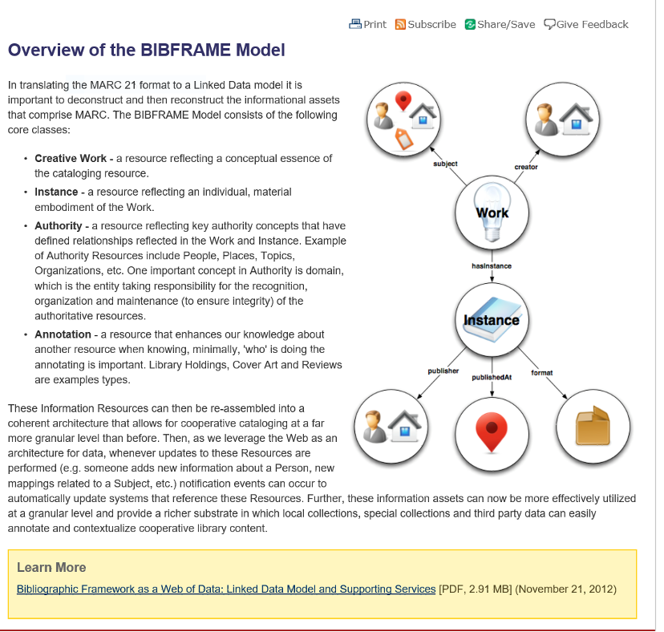Useful Definitions: Authority Control
- Broad concept for establishing/maintaining consistency in records
maintains consistency of names and other terms occurring in selected access points
shows relationships between an “authorized” or “controlled” term and variants or related terms
Three forms:
name authority control
title authority control
subject authority control
- Certain fields may be under authority control, typically the fields that serve as access points
Authority Control Defined
“the process of pulling together into a single authority record all the forms of a name that apply to a single name; all the variant titles that apply to a single work; all the synonyms, related terms, broader terms, and narrow terms that apply to a particular subject heading” (Taylor, 1999 p. 20).
“the determination of the standardized forms of subject terms and names” (Chan, 1996 p. 12).
Useful Definitions: Access Points
“almost any word in a record when keyword searching is used. However, the term access point is usually applied to a particular name, title, or subject” (Taylor, 1999 p. 20).
“A name, term, code, etc. under which a bibliographic record may be searched and identified. Also called a “heading” (Chan, 1996 p. 479).
database application: any field you designate as a searchable field becomes an access point to user
“a name, term, code, etc., under which information pertaining to a specific entity will be found” (RDA, glossary)
Useful Definitions—Access Points
- Authorized access point– “the standardized access point representing an entity” (RDA glossary)
- Variant access point – “an alternative to the authorized access point representing an entity” (RDA glossary)
- Can be authorized for use or NOT authorized for use
Useful Definitions: Headings
When you use name authority control in bibliographic records, in the 1XX fields, we use what are called Main Headings, or Authorized Name, Authorized Headings.
“A name, word, or phrase placed at the head of a catalog entry to provide an access point” (Chan, 1996 p. 485: AACR2R, 1998 p. 618).
“An access point printed at the top of a surrogate record or at the top of a listing of related works in an online resource” (Taylor, 1999 p. 243).
Example of Author Heading
Providing Access to Record
- Two separate, but related concepts
- Searchable Fields
- Access Points
- Distinguishing between
- structure in the record that can be searched (e.g., field)
- data that is held in that structure
Authority Work Process
- Create authority records
- Gather the records into an authority file
- Link that file to a bibliographic file
- Maintain the authority file and system
- Evaluate the file and system
Elements of an Authority Records
- Establish the authorized form of the name, title or subject (used to be called heading, now is called authorized access point)
- Once the authorized access point is determined, identify variant forms of the name, title, subject
- Link the variants to the authorized access point
- Document the decisions and sources used for these activities
- Record all in an authority record
Example Authority Record
Example USMARC Authority Record
How Does It Work?
- Search example
- Author is: Heim, Kathleen
- Look at results
- Explanation for getting records with the following names listed as author
- Heim, Kathleen M.
- McCook, Kathleen de la Pena
- Are these the same person?
- Search OCLC, LC’s Name Authority File
Name Authority Record for Heim
Name Authority Record for Heim (MARC)
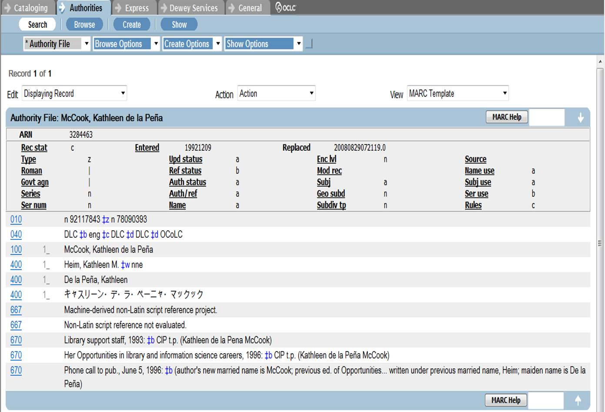
Using Access Points in BiB Records
Once we either construct an authorized access point OR we use an authority file to determine the authorized access point, we would use this name, title, or subject term in the appropriate field in our MARC bibliographic record.
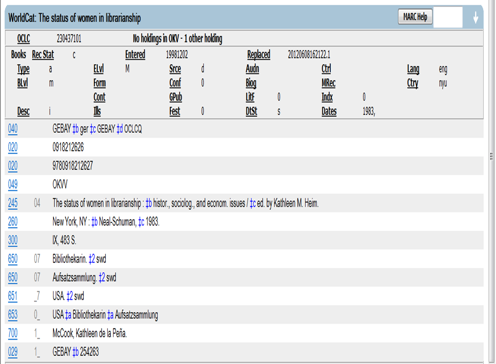
Putting It All Together
- Descriptive cataloging using AACR2R or RDA
- Combined with subject analysis and selection of controlled terms from controlled vocabularies like: LCSH, MESH, Sears, ERIC
- Classification added, based on subject of object (LCC, DDC, faceted schemes)
- Implemented in different formats/tools:
- In past: manual card catalog
- Presently: MARC records (OCLC), metadata schemes (Dublin Core), XML Marc